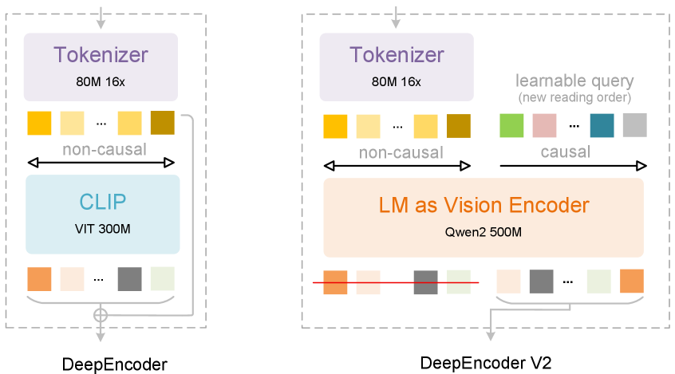
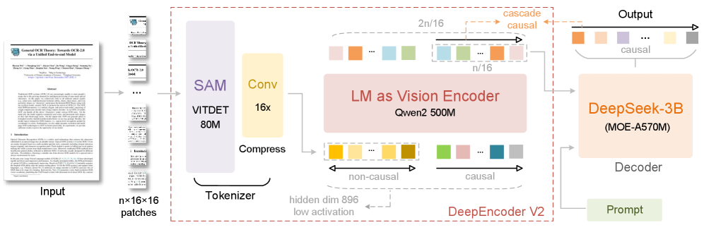
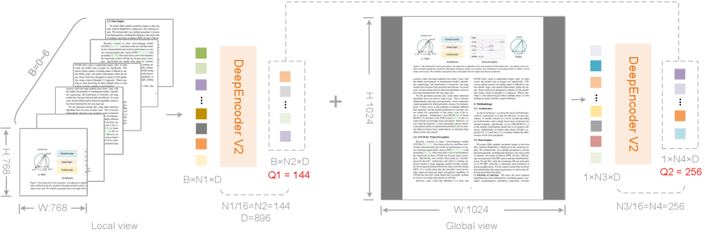
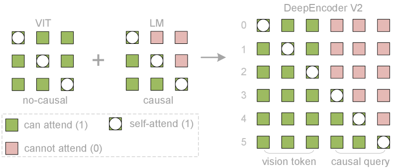

普通多模态模型(VLM)把图像 patch 按「从左上到右下」的光栅顺序死板地拉平成 1D 序列再喂给 LLM——这违背了人眼「按语义逻辑跳读」的方式,在复杂版面/表格/公式上尤其吃亏。
DeepSeek-OCR 2 把视觉编码器里的 CLIP 换成一个小号 LLM(Qwen2-0.5B),并引入一组叫 causal flow query(因果流查询) 的可学习 token。通过定制的注意力掩码,编码器能在把内容交给解码器之前,主动按图像语义把视觉 token 重新排好序,模拟人类阅读顺序。
结果:在 OmniDocBench v1.5 上达到 91.09%(比 DeepSeek-OCR 提升 +3.73%),阅读顺序错误率(R-order Edit)从 0.085 降到 0.057,而且视觉 token 上限只用到 1120(更省)。本质上,它用两个级联的 1D 因果推理结构去逼近真正的 2D 推理。
LLM 天生是为 1D 序列训练的,而图像是 2D 结构。当一张图被切成 patch、拉平成一串视觉 token 时,主流 VLM 都默认用光栅扫描(raster-scan,从左上到右下)的固定顺序,再配上固定位置编码送进 LLM。
论文用了一个很形象的类比:人眼的注视点(fixation)其实就像视觉 token——局部清晰、全局有感知。但人不会从左上角一行行扫到右下角。看一张螺旋图时,眼睛会顺着「内在逻辑」流动,每一次注视都因果地依赖上一次。换句话说,视觉 token 应该按语义来决定先看谁、后看谁,而不是按像素坐标。
下面用一个最小例子直观感受「光栅顺序」和「语义因果顺序」的差别——同一张双栏论文页,两种读法给出的 token 序完全不同:
注:此示意图为帮助理解而绘制,用以说明「重排序」要解决的问题;论文未给出该具体页面的 token 序样例。
要理解 OCR 2,先要知道它的前作 DeepSeek-OCR(2025)长什么样。OCR-1 的核心是 DeepEncoder:先用一个 80M 参数的视觉 tokenizer(SAM + 卷积)把图像做 16× 压缩,再交给 CLIP ViT(300M) 提取并压缩视觉知识。它解决的是「用尽量少的视觉 token 表示一页文档」的光学压缩问题。
DeepSeek-OCR 2 几乎沿用了整套管线(tokenizer、解码器、数据都基本不变),唯一的关键升级在编码器:把 CLIP 换成 LLM 风格架构(称为 DeepEncoder V2),并在视觉 token 后面追加一组可学习的 causal flow query。正因为其他部分都对齐,作者认为可以把 OCR-1 当成干净的对照基线。

整体管线和 OCR-1 一样是「编码器 + 解码器」,但编码器升级成了 DeepEncoder V2。先看全景图,再逐个模块拆。

第一段是视觉 tokenizer:80M 的 SAM-base + 两层卷积,通过窗口注意力实现 16× token 压缩,用极少参数大幅降低后续全局注意力的算力和激活显存。唯一改动是把最后一层卷积的输出维度从 1024 降到 896,以对齐后面的 LM 编码器。作者强调这个压缩 tokenizer 不是必须的,也可以换成简单的 patch embedding,保留它纯粹是因为省。
原来这里是 CLIP ViT,现在换成 Qwen2-0.5B(500M,与 CLIP 的 300M 量级相当),并用一种双流注意力:
作者试过 mBART 式的「编码器-解码器 + cross-attention」结构,结果不收敛。他们推测:把视觉 token 隔离在独立编码器里会导致视觉信息交互不足。而「视觉 token 作前缀直接拼接」的设计,能让视觉 token 在所有层都保持活跃,持续和因果查询交换信息——这是 V2 能 work 的隐性前提。
因果查询的数量等于视觉 token 数,即 W×H / (16²×16)。为避免给不同分辨率维护多套 query,论文采用多裁剪(multi-crop)策略 + 固定查询配置:

DeepEncoder V2 的注意力掩码由两块拼成:左区对视觉 token 用双向掩码(像 ViT,token 之间全可见),右区对因果流 token 用三角因果掩码(像 decoder-only LLM,只能看前面)。沿序列维度拼接后得到掩码 M:
注意右上角是 0(m×n):视觉 token 看不到因果查询(单向信息流);而左下角是 1(n×m):因果查询能看到所有视觉 token。这正是「视觉信息向查询单向汇聚 + 查询之间因果有序」的数学表达。

因为 OCR 2 聚焦在编码器改进,解码器原封不动地沿用 OCR-1 的 3B 参数 MoE 结构(约 500M 激活参数)。完整前向可写成:先用 tokenizer ℰ 把图像映射成 m 个视觉 token,与 n 个因果查询拼接后过 L 层带掩码 M 的 Transformer,投影算子 πQ 只取最后 n 个 token,再交给语言解码器 𝒟 输出 logits。
下面这个分步演示把上面的模块串起来。点「下一步」按自己的节奏看每一阶段到底发生了什么。
这是全文最大的哲学野心。编码器先做「阅读逻辑推理」(用查询 token 因果地重排视觉信息),解码器再做「视觉任务推理」(在排好序的表示上自回归)。两个 1D 因果推理器一级联,作者认为这有望通向真正的 2D 推理——而不是把 2D 强行拍平成 1D。
作者特意让因果查询和视觉 token 数量相等(还带 padding/边框冗余),目的是给模型足够的「重新注视(re-fixation)」容量。他们甚至展望:若要支持多次回看、多跳重排,未来可能需要比原视觉序列更长的因果流 token。
编码器输出里,前半的视觉 token 被直接丢弃,只有后半「排好序」的因果查询往下走。这意味着解码器从一开始拿到的就是符合阅读逻辑的序列,天然对齐 LLM 的单向注意力,弥合了 2D 空间结构与 1D 因果语言建模之间的鸿沟。
既然能用 LLM 当视觉编码器,那同一个编码器(共享 Wk/Wv 投影、注意力、FFN)理论上只要换模态专属的查询嵌入,就能同时压缩文本、提取语音特征、重排视觉内容。更妙的是,它能自然继承 LLM 社区的基建:MoE、高效注意力等优化拿来即用。
「这种两个 1D 因果推理器的级联,有望带来真正的 2D 推理:编码器执行阅读逻辑推理,解码器在因果有序的表示上执行视觉任务推理。」 —— 原文 §6.1 Towards Genuine 2D Reasoning(译)
主战场是 OmniDocBench v1.5(1355 页文档,9 大类,中英文混合)。一句话结论:DeepSeek-OCR 2 在对比中最低的视觉 token 预算下,拿到了端到端模型里很强的成绩,尤其是阅读顺序明显变好。
论文坦言 OCR 2 在报纸等文字超密集类别上文本编辑距离 >0.13。原因有二:(1)较低的 token 上限可能不够装下超密集文本(未来加局部裁剪即可缓解);(2)训练数据不足——报纸相关样本只有 25 万,不够训好 DeepEncoder V2。不过在所有 9 类上,阅读顺序指标都稳定优于 OCR-1。
| 模型 | V-token max ↓ | 总分 ↑ | 文本 Edit ↓ | 公式 CDM ↑ | 表格 TEDS ↑ | R-order Edit ↓ |
|---|---|---|---|---|---|---|
| Gemini-2.5 Pro | — | 88.03 | 0.075 | 85.82 | 85.71 | 0.097 |
| Qwen3-VL-235B | >6000 | 89.15 | 0.069 | 88.14 | 86.21 | 0.068 |
| MinerU2.5(pipeline) | — | 90.67 | 0.047 | 88.46 | 88.22 | 0.044 |
| PaddleOCR-VL(pipeline) | — | 92.86 | 0.035 | 91.22 | 90.89 | 0.043 |
| DeepSeek-OCR(9-crops) | 1156 | 87.36 | 0.073 | 84.14 | 85.25 | 0.085 |
| DeepSeek-OCR 2 | 1120 | 91.09 | 0.048 | 90.31 | 87.75 | 0.057 |
| 相对 OCR-1 | ↓36 | ↑3.73 | ↓0.025 | ↑6.17 | ↑2.5 | ↓0.028 |
注:Pipeline 类(如 PaddleOCR-VL)是多模块流水线,总分更高但视觉 token 不可比;DeepSeek-OCR 2 是端到端模型且 token 预算最低。数据来自原文表 1。
| 模型 | V-token max ↓ | 文本 ↓ | 公式 ↓ | 表格 ↓ | R-order ↓ | 整体 Edit ↓ |
|---|---|---|---|---|---|---|
| Gemini-3 Pro | 1120 | — | — | — | — | 0.115 |
| Seed-1.8 | 5120 | — | — | — | — | 0.106 |
| DeepSeek-OCR | 1156 | 0.073 | 0.236 | 0.123 | 0.085 | 0.129 |
| DeepSeek-OCR 2 | 1120 | 0.048 | 0.198 | 0.096 | 0.057 | 0.100 |
数据来自原文表 2。所有指标越低越好。
| 模型 | 指标 | 线上用户日志(图片) | 预训练数据(PDF) |
|---|---|---|---|
| DeepSeek-OCR | 重复率 ↓ | 6.25% | 3.69% |
| DeepSeek-OCR 2 | 重复率 ↓ | 4.17%(↓2.08%) | 2.88%(↓0.81%) |
数据来自原文表 4。生产中无 ground truth,重复率是主要可观测质量指标。